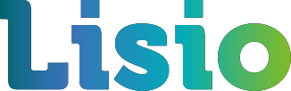
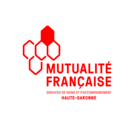
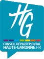
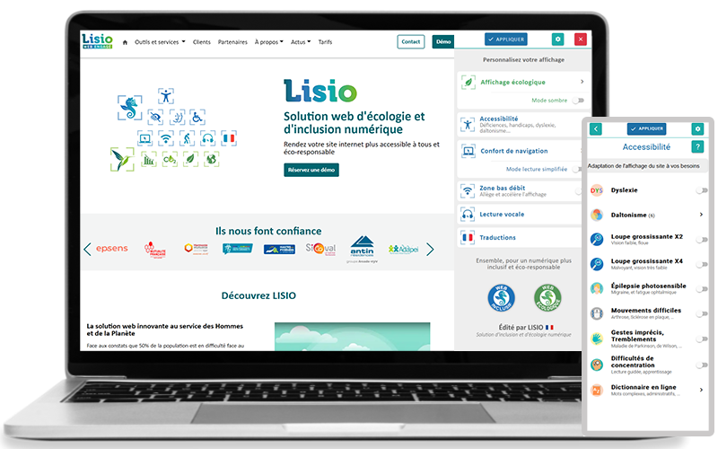
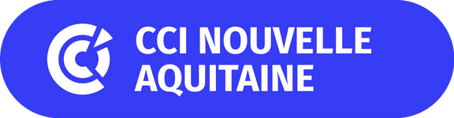
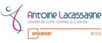
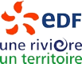
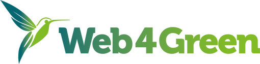

Constatant que 50% de la population est en difficulté face au numérique et que l’impact
environnemental du web ne cesse de croître, nous avons développé la solution LISIO,
un ensemble d'outils et services issus de la R&D française.
A partir de son module web, LISIO adapte, sans refonte et en temps réel, l'affichage de
votre site internet aux besoins spécifiques de chaque visiteur (handicaps, difficultés
liées à l'âge, illectronisme, zones bas débit ...) et réduit l'impact environnemental lié à sa
consultation.
Les outils et services LISIO s’adressent à tous les propriétaires de sites internet, intranet
et applications web qui souhaitent s'engager en faveur du numérique responsable. La solution innovante pour le web au service des Hommes et de la Planète
Découvrez LISIO en vidéoSolution d'inclusion et d'écologie
pour votre site internet
Rendez votre site internet plus accessible
à tous et éco-responsable.
Ils nous font confiance

Inclusion
de tous vos publics sans
discrimination
Z
Promotion
de vos engagements
RSEValorisation
de votre image
socialeFidélisation
de vos internautes,
clients et partenairesRéduction
de votre impact
carboneAccessibilité et confort de navigation
Zone bas débit
Lecture vocale et traduction multi-langue
Audit
Mise en conformité: RGAA, FALC, langage clair
Sensibilisation au numérique inclusif > Outils d'inclusion numérique
> Services d'accessibilité numériqueRéduisez l'impact environnemental de votre site internet Rendez votre site internet accessibles à tous
Navigation en mode écologique
Calculateur carbone
Conseils de réduction: audit, éco-conception web ...
Contribution à des projets écologiques
Sensibilisation à l'écologie numérique > Outils d'écologie numérique
> Services d'écologie numérique
Vos bénéfices LISIO
Ensemble, construisons un numérique responsable
et solidaire au service des hommes et de la planète !
Prenons rendez-vous !www.lisio.frDes offres complémentaires au service d'un web pour tous et plus durable